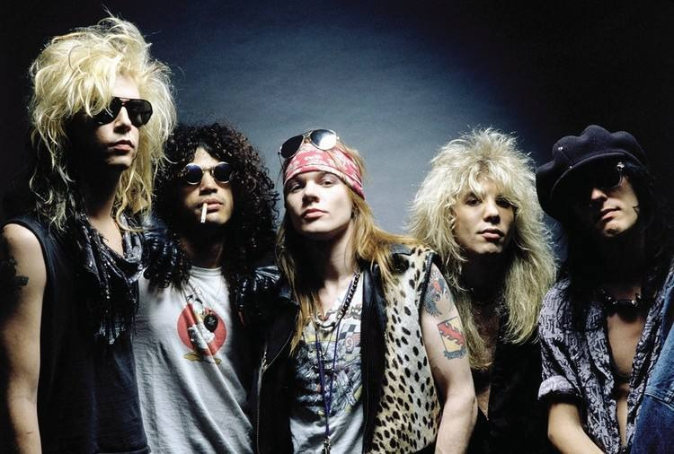

Guns N Roses
Formação
O grupo foi formado no início de 1985 pelos membros do Hollywood Rose Axl Rose (vocais) e Izzy Stradlin (guitarra rítmica); e membros do L.A. Guns Tracii Guns (guitarra solo), Ole Beich (baixo) e Robbie Gardner (bateria). A nova banda criou o seu nome a partir da combinação de dois dos nomes dos membros do grupo. Depois de pouco tempo (várias fontes indicam que apenas dois ou três shows foram feitos com os integrantes Guns, Beich & Gardner), o baixista Ole Beich foi substituído por Duff McKagan, enquanto a falta de Tracii Guns nos ensaios levou à sua substituição por Slash.
Slash tinha tocado com McKagan no Road Crew e com Stradlin durante um curto período no Hollywood Rose. A nova formação se reunira rapidamente, mas, pouco antes de embarcar em uma turnê curta de Sacramento, na Califórnia, para Seattle, em Washington, o baterista Rob Gardner saiu e foi substituído por um amigo de Slash, Steven Adler (que também era do Road Crew). A banda, que continuou a ser chamada Guns N' Roses, mesmo depois da partida de Tracii Guns, estabeleceu a sua primeira formação estável até o chamado "Hell Tour".
A estreia nos palcos da nova formação aconteceu em 6 de Junho de 1986, no Troubador, em Hollywood, para cerca de 150 pessoas. Após isso, a banda seguiu para Seattle, onde teve a sua turnê de estreia, conhecida por Hell Tour. No caminho entre Los Angeles e Seattle, a van onde viajavam quebrou, não restando alternativa a não ser abandonar o veículo e pedir carona. Com isso, a banda demorou mais de dois dias para chegar, atrasando seu primeiro compromisso em Seattle e causando, como consequência, o cancelamento da turnê inicial do Guns N' Roses pelos Estados Unidos, fazendo com que os membros da banda tivessem que vender parte do equipamento para voltar para casa.
Appetite for Destruction e G N' R Lies (1987-1989)
As dificuldades não durariam muito. Appetite for Destruction foi lançado em julho de 1987 e se tornou, em pouco tempo, o primeiro disco de estreia de uma banda de hard rock a alcançar o primeiro lugar nas paradas e também foi o disco de estreia que mais vendeu na história da música, com cerca de 18 milhões de cópias vendidas somente nos Estados Unidos.[10] À medida que o disco vendia mais e mais, a banda prosseguia com seus shows, abrindo para bandas maiores como Iron Maiden e Rolling Stones, e posteriormente encabeçando seus próprios shows na "Appetite for Destruction Tour".
Foi aclamado pela crítica, mas o álbum e seu primeiro single, "Welcome to the Jungle", ficaram um bom tempo sem muita exposição, quase um ano, até que David Geffen pediu à MTV para transmitir o videoclipe da faixa.[11] Apesar de inicialmente passar apenas de madrugada, logo o vídeo se tornou um dos mais requisitados da emissora. O segundo single, "Sweet Child o' Mine", foi ainda mais bem-sucedido, e quando o terceiro, "Paradise City", foi lançado, o álbum já tinha alcançado o topo das paradas.
"Welcome to the Jungle" também foi destaque em um filme de Clint Eastwood em 1988, The Dead Pool, com participação de membros da banda.
Em 1988, a Geffen decide lançar um novo álbum, G N' R Lies, composto de apenas quatro composições novas e das quatro gravações do EP Live ?!*@ Like a Suicide de 1986. Torna-se claro, neste disco, o caminho que viria a ser tomado pela banda nos anos seguintes. Enquanto as quatro faixas gravadas em 1986 primam pela agressividade e velocidade, as novas faixas de 1988 introduzem instrumentos acústicos que culminam na melosa "Patience". O álbum G N' R Lies também sobe as paradas e se junta a Appetite for Destruction, que continua a vender cada vez mais.
Contrastando com o sucesso cada vez maior, os componentes geram escândalos e controvérsias nos anos que se seguem: agressões a vizinhos e repórteres, tumultos constantes gerados durante os shows, brigas, abuso de drogas e bebida, prisões e dezenas de processos em todos os países por onde a banda passava.
| Albuns | Ano de lançamento |
| Apetite for Destruction | Julho de 1987 |
| Use You Illusion | Setembro de 1991 |
| Chinese Democracy | Novembro de 2018 |